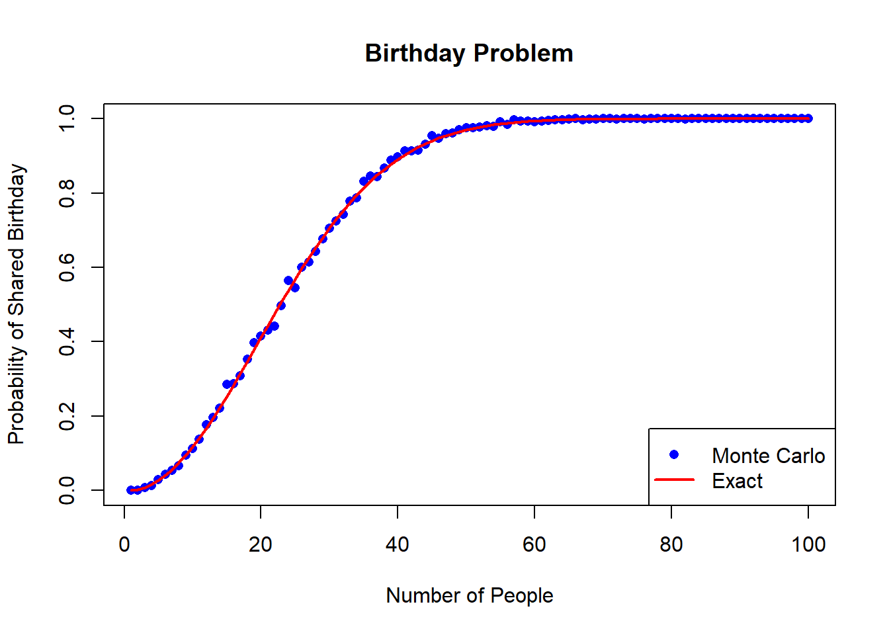
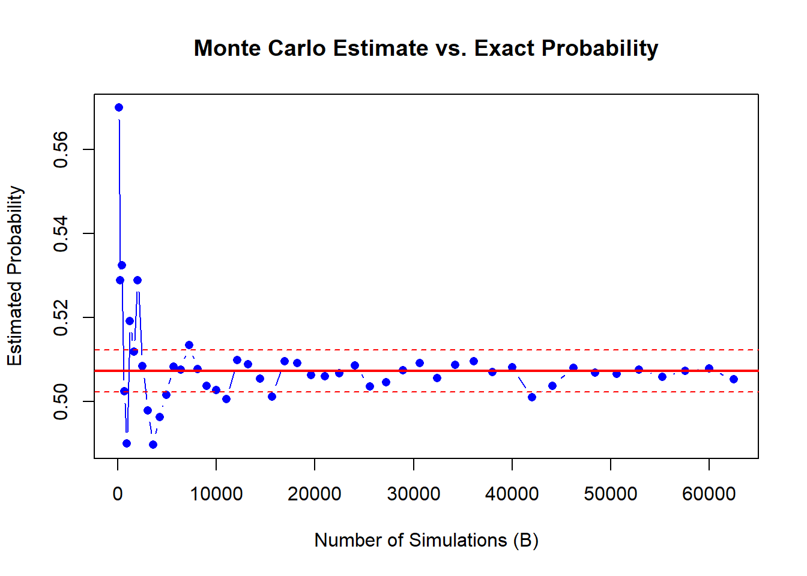
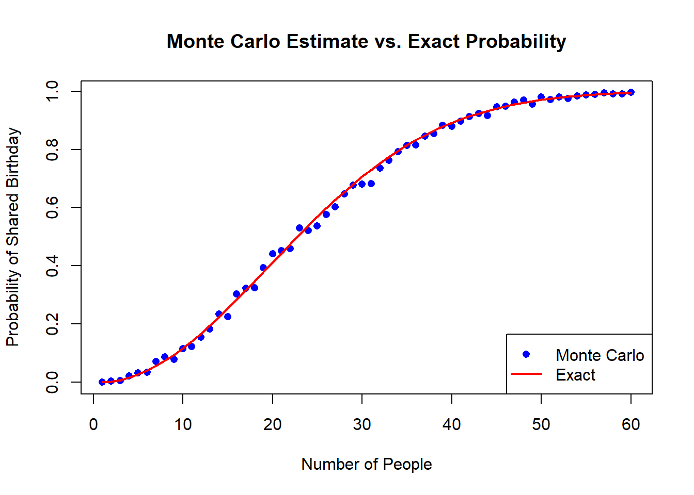
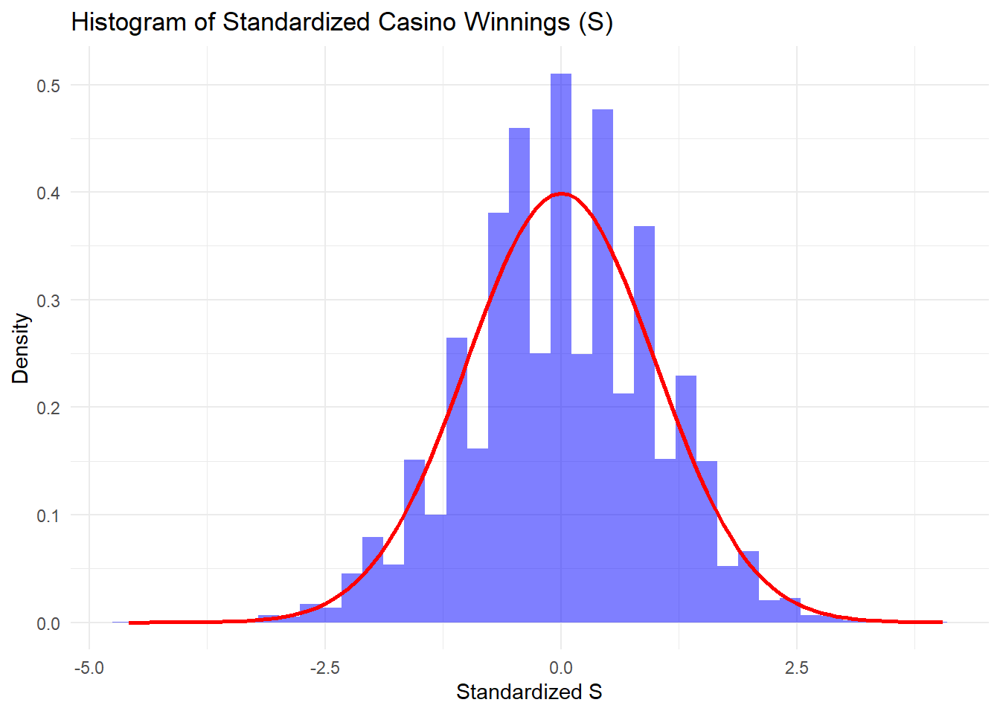
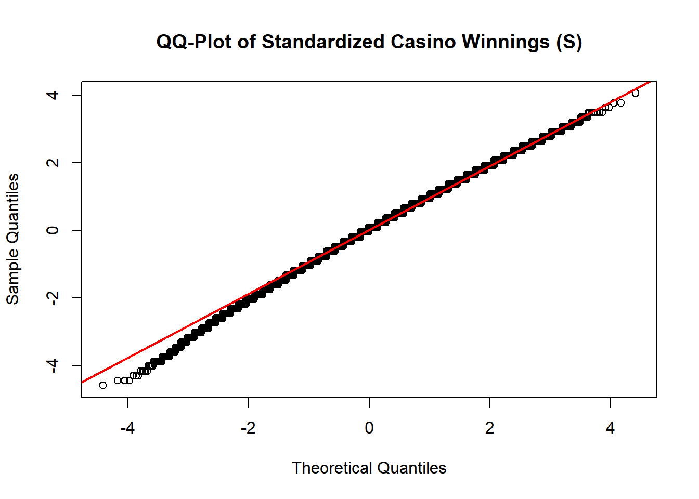

Please answer each of the exercises below. For those asking for a mathematical calculation please use LaTeX to show your work. Each problem is worth 1 point, for a total of 16 points.
Important: Make sure that your document renders in less than 5 minutes.
Write a function called same_birthday that takes a number n as an argument, randomly generates n birthdays and returns TRUE if two or more birthdays are the same. You can assume nobody is born on February 29.
Hint: use the functions sample, duplicated, and any.
same_birthday <-function(n){ # Generate n random birthdays (days of the year from 1 to 365) birthdays <-sample(1:365, size = n, replace =TRUE)# Check if any birthday appears more than once has_duplicate <-any(duplicated(birthdays))return(has_duplicate)}set.seed(123) same_birthday(23)
[1] TRUE
same_birthday(50)
[1] TRUE
same_birthday(10)
[1] FALSE
same_birthday(2)
[1] FALSE
Suppose you are in a classroom with 50 people. If we assume this is a randomly selected group of 50 people, what is the chance that at least two people have the same birthday? Use a Monte Carlo simulation with $B=$1,000 trials based on the function same_birthday from the previous exercises.
set.seed(2025)B <-10^3# Monte Carlo simulationresults <-replicate(B, same_birthday(50)) # Calculate probabilityprobability <-mean(results)# Print the estimated probabilityprint(paste("Estimated probability of at least two people sharing a birthday:", probability))
[1] "Estimated probability of at least two people sharing a birthday: 0.972"
Redo the previous exercises for several values on n to determine at what group size do the chances become greater than 50%. Set the seed at 1997.
set.seed(1997) # Set seed for reproducibility# Function to compute probability of at least two people sharing a birthdaycompute_prob <-function(n, B =10^3) { results <-replicate(B, same_birthday(n))return(mean(results))}# Find the smallest group size where probability > 50%group_sizes <-1:100# Test for group sizes from 1 to 100probabilities <-sapply(group_sizes, compute_prob) # Find the smallest group size where probability exceeds 50%threshold_index <-which(probabilities >0.5)[1] # Get the first index where probability > 50%group_size_50 <- group_sizes[threshold_index]print(paste("The group size where the chance becomes greater than 50% is:", group_size_50))
[1] "The group size where the chance becomes greater than 50% is: 23"
The group size where the chance becomes greater than 50% is: 23
These probabilities can be computed exactly instead of relying on Monte Carlo approximations. We use the multiplication rule:
Plot the probabilities you obtained using Monte Carlo as a points and the exact probabilities with a red line.
Hint: use the function prod to compute the exact probabilities.
exact_prob <-function(n) {if (n >365) return(1) # If n > 365, at least two must share a birthday prob_no_shared <-prod((365:(365- n +1)) /365) return(1- prob_no_shared)}n_values <-1:100monte_carlo_probs <-sapply(n_values, compute_prob)exact_probs <-sapply(n_values, exact_prob)# Plot comparisonplot(n_values, monte_carlo_probs, col ="blue", pch =16, main ="Birthday Problem",xlab ="Number of People", ylab ="Probability of Shared Birthday")lines(n_values, exact_probs, col ="red", lwd =2) # Exact probability in redlegend("bottomright", legend =c("Monte Carlo", "Exact"), col =c("blue", "red"), pch =c(16, NA), lty =c(NA, 1), lwd =c(NA, 2))

Note that the points don’t quite match the red line. This is because our Monte Carlos simulation was based on only 1,000 iterations. Repeat exercise 2 but for n = 23 and try B <- seq(10, 250, 5)^2 number iterations. Plot the estimated probability against sqrt(b). Add horizontal lines around the exact probability \(\pm\) 0.005. Note this could take several seconds to run. Set the seed to 1998.
set.seed(1998)B_values <-seq(10, 250, 5)^2# Function to compute Monte Carlo probability for a given Bmonte_carlo_estimate <-function(B, n =23) { results <-replicate(B, same_birthday(n)) # Run B simulationsreturn(mean(results)) # Compute probability estimate}# Compute Monte Carlo estimates for each B valuemc_probs <-sapply(B_values, monte_carlo_estimate)# Get exact probability for n = 23exact_23 <-exact_prob(23)# Compute error bounds (±0.005)upper_bound <- exact_23 +0.005lower_bound <- exact_23 -0.005# Plot Monte Carlo estimatesplot(B_values, mc_probs, type ="b", col ="blue", pch =16,xlab ="Number of Simulations (B)", ylab ="Estimated Probability",main ="Monte Carlo Estimate vs. Exact Probability")# Add horizontal lines for exact probability ±0.005abline(h = exact_23, col ="red", lwd =2) # Exact probabilityabline(h = upper_bound, col ="red", lty =2) # Upper boundabline(h = lower_bound, col ="red", lty =2) # Lower bound

stable_B <- B_values[which(abs(mc_probs - exact_23) <0.005)[1]]print(paste("Monte Carlo estimates stabilize within ±0.005 at B =", stable_B))
[1] "Monte Carlo estimates stabilize within ±0.005 at B = 625"
Describe when it starts to stabilize in that the estimates are within 0.005 for the exact probability.
YOUR SHORT ANSWER HERE: The Monte Carlo estimates start to stabilize within ±0.005 of the exact probability when B = 625. At this time, the estimated probability varies very slightly around the exact probability, indicating that there have been enough repetitions to produce a credible approximation.
Repeat exercise 4 but use the results of exercise 5 to select the number of iterations so that the points practically fall on the red curve.
Hint: If the number of iterations you chose is too large, you will achieve the correct plot but your document might not render in less than five minutes.
set.seed(1998) B <-625# Use the stabilized value from exercise 5n_values <-seq(1, 60) # Range of group sizes# Compute Monte Carlo estimatesmonte_carlo_probs <-sapply(n_values, function(n) { results <-replicate(B, same_birthday(n))return(mean(results))})# Compute exact probabilities using the formulaexact_probs <-sapply(n_values, exact_prob)# Plot Monte Carlo estimatesplot(n_values, monte_carlo_probs, col ="blue", pch =16,xlab ="Number of People", ylab ="Probability of Shared Birthday",main ="Monte Carlo Estimate vs. Exact Probability")lines(n_values, exact_probs, col ="red", lwd =2) # Exact probability in redlegend("bottomright", legend =c("Monte Carlo", "Exact"), col =c("blue", "red"),pch =c(16, NA), lty =c(NA, 1), lwd =c(NA, 2))

7a. In American Roulette, with 18 red slots, 18 black slots, and 2 green slots (0 and 00), what is the probability of landing on a green slot?
7b. The payout for winning on green is $17 dollars. This means that if you bet a dollar and it lands on green, you get $17. If it lands on red or black you lose your dollar. Create a sampling model using sample to simulate the random variable \(X\) for the Casino’s winnings when one person bets on green.
set.seed(2025)n <-1prob_green <-2/38prob_other <-1- prob_greencasino_winning <-sample(c(-17, 1), size = n, replace =TRUE, prob =c(prob_green, prob_other))print(paste("Casino winning for one bet:", casino_winning))
[1] "Casino winning for one bet: 1"
Now create a random variable \(S\) of the Casino’s total winnings if $n = $1,000 people bet on green. Use Monte Carlo simulation to estimate the probability that the Casino loses money.
library(ggplot2)set.seed(2025)n <-1000simulations <-100000prob_green <-2/38prob_other <-1- prob_green# Monte Carlo simulation: total casino winnings Scasino_total_winnings <-replicate(simulations, { bets <-sample(c(-17, 1), size = n, replace =TRUE, prob =c(prob_green, prob_other))sum(bets)})# Compute empirical probability that casino loses money (S < 0)prob_casino_loses_MC <-mean(casino_total_winnings <0)# Print resultsprint(paste("Monte Carlo estimated probability of casino losing money:", prob_casino_loses_MC))
[1] "Monte Carlo estimated probability of casino losing money: 0.33343"
What is the expected value of \(S\)? Does the Monte Carlo simulation confirm this?
The total casino earnings, ( S ), over 1,000 bets is:
\[
S = \sum_{i=1}^{1000} X_i
\]
\[
E(S) = n \times E(X)
\]
\[
E(S) = 1000 \times 0.0526 = 52.63
\]
The Monte Carlo estimate of ( E(S) ) should also be 52.63
set.seed(2025)n <-1000# 1,000 betssimulations <-100000# Monte Carlo trials# Simulate total casino winningscasino_total_winnings <-replicate(simulations, { bets <-sample(c(-17, 1), size = n, replace =TRUE, prob =c(2/38, 36/38))sum(bets)})# Compute Monte Carlo estimate of E(S)E_S_MC <-mean(casino_total_winnings)# Print resultsprint(paste("Expected value of S (E[S]):", E_S_MC))
[1] "Expected value of S (E[S]): 52.96222"
YOUR SHORT ANSWER HERE: Randomness in Monte Carlo simulations: Even with 100,000 trials, the simulation may still have minor fluctuations. Thus,monte Carlo estimation is close enough and confirms the theoretical value.
What is the standard error of \(S\)? Does the Monte Carlos simulation confirm this?
\[
SE(S) = \sqrt{n} \times SE(X)
\]
\[
SE(S) = \sqrt{1000} \times 4.02
\]
Approximating:
\[
SE(S) = 31.62 \times 4.02 = 127.1
\]
Thus, the standard error of ( S ) is:
\[
SE(S) \approx 127.1
\]
set.seed(2025)n <-1000simulations <-100000prob_green <-2/38prob_other <-1- prob_greencasino_total_winnings <-replicate(simulations, { bets <-sample(c(-17, 1), size = n, replace =TRUE, prob =c(prob_green, prob_other))sum(bets)})# Compute Monte Carlo estimate of SE(S)SE_S_MC <-sd(casino_total_winnings)print(paste("Monte Carlo estimate of SE(S):", SE_S_MC))
[1] "Monte Carlo estimate of SE(S): 127.249667101527"
YOUR SHORT ANSWER HERE: Monte Carlo inherently has small fluctuations due to randomness. Thus, monte Carlo confirms the theoretical value with a very small deviation.
Use data visualization to convince yourself that the distribution of \(S\) is approximately normal. Make a histogram and a QQ-plot of standardized values of \(S\). The QQ-plot should be on the identity line.
library(ggplot2)set.seed(2025)n <-1000simulations <-100000prob_green <-2/38prob_other <-1- prob_green# Monte Carlo simulation: total casino winnings Scasino_total_winnings <-replicate(simulations, { bets <-sample(c(-17, 1), size = n, replace =TRUE, prob =c(prob_green, prob_other))sum(bets)})# Compute theoretical mean and standard deviationE_S <-mean(casino_total_winnings) # Monte Carlo estimate of E(S)SE_S <-sd(casino_total_winnings) # Monte Carlo estimate of SE(S)# Standardize SZ_S <- (casino_total_winnings - E_S) / SE_S# Plot histogram of standardized S (Fixed for ggplot2 3.4.0+)ggplot(data.frame(Z_S), aes(x = Z_S)) +geom_histogram(aes(y =after_stat(density)), bins =40, fill ="blue", alpha =0.5) +stat_function(fun = dnorm, args =list(mean =0, sd =1), color ="red", linewidth =1) +labs(title ="Histogram of Standardized Casino Winnings (S)",x ="Standardized S",y ="Density") +theme_minimal()

# QQ-plot (Normal Q-Q Plot)qqnorm(Z_S, main ="QQ-Plot of Standardized Casino Winnings (S)")qqline(Z_S, col ="red", lwd =2)

Notice that the normal approximation is slightly off for the tails of the distribution. What would make this better? Increasing the number of people playing \(n\) or the number of Monte Carlo iterations \(B\)?
Answer here
1.Increase n (more bets make the distribution approach normal)
2.Increase Monte Carlo iterations B (reduces variability in simulation) Higher B gives a more precise estimate of the empirical distribution and smooths the histogram.
Now approximate the casino profit probability estimated using CLT. Does it agree with the Monte Carlo simulation?
The total casino earnings ( S ) over ( n = 1000 ) bets can be expressed as:
\[
S = \sum_{i=1}^{1000} X_i
\]
\[
P(S > 0)
\] By the Central Limit Theorem (CLT), ( S ) follows approximately a normal distribution:
library(ggplot2)set.seed(2025)n <-1000simulations <-100000prob_green <-2/38prob_other <-1- prob_green# Monte Carlo simulation: total casino winnings Scasino_total_winnings <-replicate(simulations, { bets <-sample(c(-17, 1), size = n, replace =TRUE, prob =c(prob_green, prob_other))sum(bets)})# Compute empirical probability that casino makes a profit (S > 0)profit_probability_MC <-mean(casino_total_winnings >0)# Print resultprint(paste("Monte Carlo estimated probability of casino profit:", profit_probability_MC))
[1] "Monte Carlo estimated probability of casino profit: 0.66657"
Answer here The Monte Carlo simulation estimates the probability of the casino making a profit as 0.66657, which is very close to the CLT approximation of 0.6605. This confirms that the normal approximation using CLT is valid for large n, as the casino’s total winnings S follows an approximately normal distribution.
How many people \(n\) must bet on green for the Casino to reduce the probability of losing money to 1%. Check your answer with a Monte Carlo simulation.
The total casino earnings ( S ) over ( n ) bets is:
As we know: \[
E(X) = 0.0526
\]
\[
SE(X) = 4.02
\]
\[
S \sim N(n \cdot E(X), \sqrt{n} \cdot SE(X))
\]
Thus, we need approximately ( n = 31,705 ) bets to ensure that the probability of the casino losing money is at most 1%.
library(ggplot2)set.seed(2025)n <-31705simulations <-100000prob_green <-2/38prob_other <-1- prob_green# Monte Carlo simulation: total casino winnings Scasino_total_winnings <-replicate(simulations, { bets <-sample(c(-17, 1), size = n, replace =TRUE, prob =c(prob_green, prob_other))sum(bets)})# Compute empirical probability that casino loses money (S < 0)prob_casino_loses_MC <-mean(casino_total_winnings <0)# Print resultsprint(paste("Monte Carlo estimated probability of casino losing money:", prob_casino_loses_MC))
[1] "Monte Carlo estimated probability of casino losing money: 0.01025"